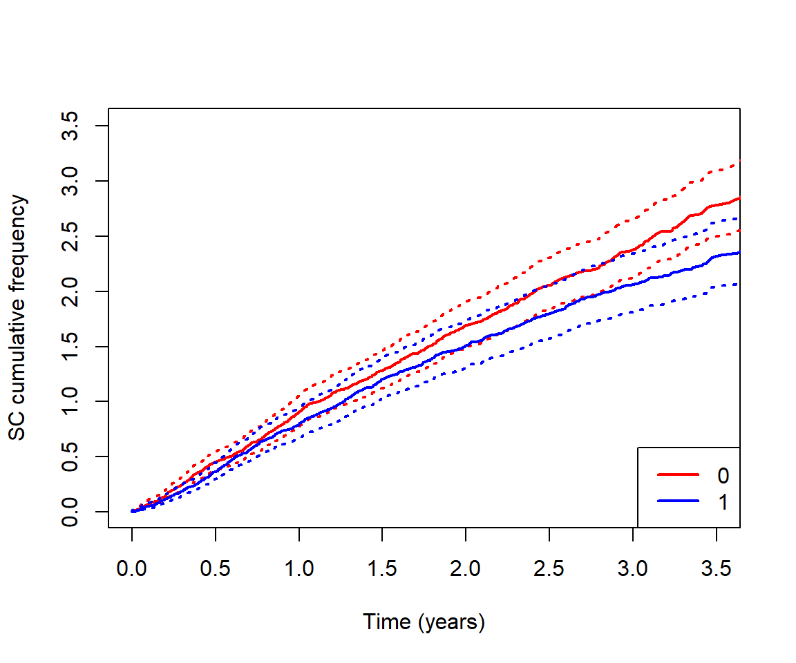
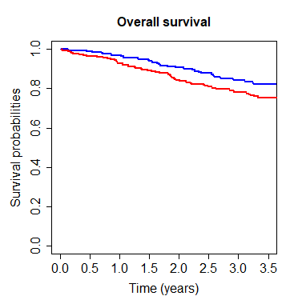
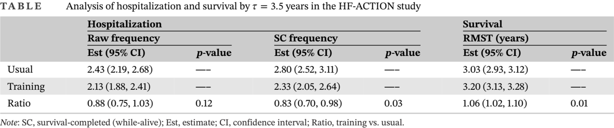
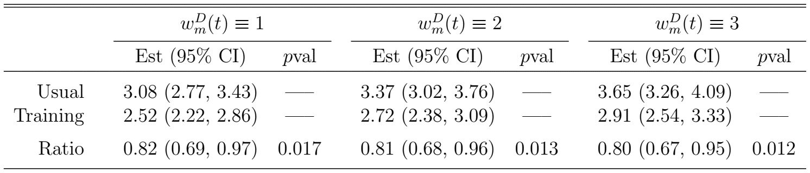

While-alive estimands
Summarizing patient experience under differential length of exposure
Department of Biostatistics & Medical Informatics
University of Wisconsin-Madison
Motivating example
A cardiovascular trial (HF-ACTION) (O’Connor et al. 2009)
Subpopulation: 741 heart failure patients
- Median and max follow-up 2.5 and 3.9 years, respectively
Treatment arms
- Exercise training + usual care \((n_1=364)\)
- Usual care alone \((n_0=377)\)
Endpoints: Death and repeated hospitalizations
| Exercise training | Usual care | |
|---|---|---|
| Death rate | 13.5% | 19.9% |
| Avg # hospitalization (SD) | 1.8 (2.1) | 2.0 (2.1) |
A fundamental question
How do we measure treatment effect on recurrent hospitalizations when patients survive different lengths in different arms?
Longer survivors tend to experience more events…
Mathematical notation (\(a=1\): Treatment; \(a=0\): Control)
- \(D^{(a)}\): Survival time
- \(N_D^{(a)}(t) = I\left(D^{(a)}\leq t\right)\): Counting process for death
- \(N^{(a)}(t)\): Counting process for recurrent events (e.g., hospitalization)
- No event after death
- \({\rm d}N^{(a)}(t)=0\) for \(t>D^{(a)}\)
Standard methods
Two broad-based approaches…
Conditional event rate
- Standard analysis treating death as censoring, e.g., proportional rates model (LWYY) (Lin et al. 2000)
- Estimand: \(E\left\{{\rm d}N^{(a)}(t)\mid D^{(a)}\geq t\right\}\)
- Lacks causal interpretation (condition on post-treatment status) (ICH 2020)
Cumulative frequency
- Mean number of events in presence of death as a competing risk (Ghosh and Lin 2000; Ghosh and Lin 2002; Mao and Lin 2016)
- Estimand: \(E\left\{N^{(a)}(t)\right\}\)
- Ignores length of exposure…
A new proposal
While-alive event rate
Estimand \[\ell^{(a)}(\tau) = \frac{E\left\{N^{(a)}(\tau)\right\}}{E\left(D^{(a)}\wedge\tau\right)} =\frac{\mbox{Mean # of events by $\tau$}}{\mbox{Mean survival time by $\tau$}}\]
- \(\tau\): prespecified time horizon; \(b\wedge c :=\min(b, c)\)
- Average event rate in \([0, \tau]\) per person-time alive
- Proposed as a clinically interpretable measure to Committee for Medicinal Products for Human Use (CHMP) of European Medicines Agency (Akacha et al. 2018; CHMP 2020)
- Also called “exposure-weighted” event rate
Early work
A series of follow-up papers (Schmidli, Roger, and Akacha 2023a, 2023b; Wei et al. 2023; Fritsch et al. 2023)…
Gamma shared-frailty models: analytic expression of \(\ell^{(a)}(\tau)\)
Inference under minimal mortality: Poisson/negative-binomial/LWYY regressions
Method-of-moment estimator under a fixed censoring point
A similar idea is (independently) considered for mortality (Uno and Horiguchi 2023) \[E\{N_D^{(a)}(\tau)\}/E(D^{(a)}\wedge\tau)\]
Gaps
Generalization of estimand
General nonparametric inference procedure
General estimands - definition
While-alive loss rate (Mao 2023) \[\ell^{(a)}(\tau) = \frac{E\left\{\mathcal L\left(\mathcal H^{(a)}\right)(\tau)\right\}}{E\left(D^{(a)}\wedge\tau\right)}\]
- \(\mathcal H^{(a)}(t)=\left\{N_D^{(a)}(u), N^{(a)}(u): 0\leq u\leq t\right\}\): total outcomes by \(t\)
- \(\mathcal L\left(\mathcal H^{(a)}\right)(t)\): user-specified loss function satisfying two conditions
- A function only of \(\mathcal H^{(a)}(t)\)
- \(\mathcal L\left(\mathcal H^{(a)}\right)({\rm d}t)\equiv 0\) for \(t>D^{(a)}\) (what does this mean?)
- Average loss rate in \([0, \tau]\) per person-time alive
General estimands - examples
- Original while-alive event rate (Schmidli, Roger, and Akacha 2023a) \[\mathcal L\left(\mathcal H^{(a)}\right)(t) = N^{(a)}(t)\]
- Per-person-time mortality rate (Uno and Horiguchi 2023) \[\mathcal L\left(\mathcal H^{(a)}\right)(t) = N_D^{(a)}(t)\]
- More generally… \[\mathcal L\left(\mathcal H^{(a)}\right)(t)
= \int_0^t \left\{w^D_{N^{(a)}(u-)}(u){\rm d}N_D^{(a)}(u)+w_{N^{(a)}(u-)}(u){\rm d}N^{(a)}(u)\right\}\]
- \(w^D_m(u), w_m(u)\): weights for incident death or nonfatal event at \(u\) if patient has experienced \(m\) nonfatal events by then
General estimands - effect size
Survival-completed (SC) cumulative loss
\[L^{(a)}(\tau)=\ell^{(a)}(\tau)\tau\]
- Better graphics: \(\ell^{(a)}(\tau)\approx 0/0\) unstable for \(\tau\approx 0\)
- Properties: \(L^{(a)}(0)=0\), \(L^{(a)}(t)\uparrow\) with \(t\), and \(L^{(a)}(t)\geq E\{\mathcal L(\mathcal H^{(a)})(t)\}\)
Measuring the treatment effect…
- Risk (loss rate) ratio (RR): \(r(\tau)=\ell^{(1)}(\tau)/\ell^{(0)}(\tau)\)
- Treatment reduces average loss rate by \(100\{1-r(\tau)\}\%\)
- Absolute risk reduction (ARR): \(d(\tau)=\ell^{(1)}(\tau)-\ell^{(0)}(\tau)\)
- Treatment reduces average loss rate by \(-d(\tau)\) (per person-time alive)
Nonparametric estimation
Observed data \(\left\{\mathcal H\left(X^{(a)}\right), X^{(a)}\right\}\)
- \(X^{(a)}=D^{(a)}\wedge C^{(a)}\); \(C^{(a)}\): independent censoring time
- Two samples: \(\left\{\mathcal H_i\left(X_i^{(a)}\right), X_i^{(a)}\right\}\) \((i=1,\ldots, n_a; a = 1, 0)\)
Estimating \(\ell^{(a)}(\tau)=E\{\mathcal L(\mathcal H^{(a)})(\tau)\} /E(D^{(a)}\wedge\tau)\)…
- Demonstrator (easy) \(=\int_0^\tau S^{(a)}(t){\rm d}t\) (restricted mean survival time; RMST) (Royston and Parmar 2011)
- \(S^{(a)}(t)={\rm P}(D^{(a)} > t)\): plug in Kaplan–Meier estimator
- Numerator (moderate) \(=\int_0^\tau S^{(a)}(t-)E\{\mathcal L(\mathcal H^{(a)})({\rm d}t)\mid D^{(a)}\geq t\}\)
- Integrator estimated by \(\sum_{i=1}^{n_a}I(X_i^{(a)}\geq t)\mathcal L(\mathcal H_i^{(a)})({\rm d}t)/ \sum_{i=1}^{n_a}I(X_i^{(a)}\geq t)\)
- Robust variance estimator by delta method
Nonparametric testing
\(J\)-sample testing \((a=0, 1,\ldots, J-1)\)
\[H_0: \ell^{(0)}(\tau)=\cdots=\ell^{(J-1)}(\tau)\]
- \(\chi_{J-1}^2\) test on the \(\log\hat r^{(a)}(\tau)=\log\hat\ell^{(a)}(\tau)-\log\hat\ell^{(0)}(\tau)\) \((a= 1,\ldots, J-1)\)
Joint test of morbidity & mortality
\[H_0: \ell^{(0)}(\tau)=\cdots=\ell^{(J-1)}(\tau),\hspace{5mm} \mu^{(0)}(\tau)=\cdots=\mu^{(J-1)}(\tau)\]
- \(\mu^{(a)}(\tau)=E(D^{(a)}\wedge\tau)\): \(\tau\)-RMST
- \(\chi_{2(J-1)}^2\) test on the \(\log\hat r^{(a)}(\tau)\) and \(\log\hat\mu^{(a)}(\tau)-\log\hat\mu^{(0)}(\tau)\) \((a=1,\ldots, J-1)\)
R-package WA - usage
CRAN: https://cran.r-project.org/web/packages/WA (Mao 2021)
Main function
LRfit(id, time, status, trt, Dweight = 0, wH = NULL, wD = NULL)
id: vector of patient IDstime: vector of timesstatus: vector of event types (1= recurrent event;2= death;0= censoring)trt: vector of (binary or multiclass) treatment groupsDweight: weight for death relative to each recurrent eventwHandwD: user-supplied R-functions of(m, t)implementing \(w_m(t)\) and \(w^D_m(t)\) (overrideDweight)
Summarize and plot results by summary() and plot()
R-package WA - code example (i)
First install the package if it hasn’t been installed…
Load the package and the HF-ACTION dataset…
# load the package
library(WA)
# load the HF-ACTION dataset
dat <- hfaction_cpx12
dat[1:16,] # what the data look like id time status trt
1 HFACT00001 0.60506502 1 0
2 HFACT00001 1.04859685 0 0
3 HFACT00002 0.06297057 1 0
4 HFACT00002 0.35865845 1 0
5 HFACT00002 0.39698836 1 0
6 HFACT00002 3.83299110 0 0
7 HFACT00007 0.29021218 1 1
8 HFACT00007 1.80424367 1 1
9 HFACT00007 2.42573580 1 1
10 HFACT00007 2.68583162 1 1
11 HFACT00007 2.91307324 2 1
12 HFACT00008 0.01916496 1 0
13 HFACT00008 0.02737851 2 0
14 HFACT00011 0.06570842 0 0
15 HFACT00019 3.66598220 1 0
16 HFACT00019 4.23271732 0 0R-package WA - code example (ii)
Unweighted (while-alive) hospitalization rate
Call:
LRfit(id = dat$id, time = dat$time, status = dat$status, trt = dat$trt)
N Rec. event Death Med. Follow-up
0 377 747 75 2.496920
1 364 644 49 2.536619Summarize inferential results for restriction time \(\tau=3.5\) years…
Call:
LRfit(id = dat$id, time = dat$time, status = dat$status, trt = dat$trt)
Analysis of log loss rate (LR) by tau = 3.5:
Estimate Std.Err Z value Pr(>|z|)
Ref (Group 0) -0.223940 0.054308 -4.1235 3.731e-05 ***
Group 1 vs 0 -0.186019 0.084590 -2.1991 0.02787 *
---
Signif. codes: 0 '***' 0.001 '**' 0.01 '*' 0.05 '.' 0.1 ' ' 1
Test of group difference in while-alive LR
X-squared = 4.835905, df = 1, p = 0.02787301
Point and interval estimates for the LR ratio:
LR ratio 95% lower CL 95% higher CL
Group 1 vs 0 0.8302577 0.703412 0.9799773R-package WA - code example (iii)
If you want joint test \((\chi_2^2)\) with mortality …
Call:
LRfit(id = dat$id, time = dat$time, status = dat$status, trt = dat$trt)
Analysis of log loss rate (LR) by tau = 3.5:
Estimate Std.Err Z value Pr(>|z|)
Ref (Group 0) -0.223940 0.054308 -4.1235 3.731e-05 ***
Group 1 vs 0 -0.186019 0.084590 -2.1991 0.02787 *
---
Signif. codes: 0 '***' 0.001 '**' 0.01 '*' 0.05 '.' 0.1 ' ' 1
Test of group difference in while-alive LR
X-squared = 4.835905, df = 1, p = 0.02787301
Point and interval estimates for the LR ratio:
LR ratio 95% lower CL 95% higher CL
Group 1 vs 0 0.8302577 0.703412 0.9799773
Analysis of log RMST (restricted mean survival time) by tau = 3.5:
Estimate Std.Err Z value Pr(>|z|)
Ref (Group 0) 1.107544 0.016064 68.9443 < 2.2e-16 ***
Group 1 vs 0 0.056689 0.020349 2.7858 0.005339 **
---
Signif. codes: 0 '***' 0.001 '**' 0.01 '*' 0.05 '.' 0.1 ' ' 1
Test of group difference in while-alive LR and RMST
X-squared = 9.913726, df = 2, p = 0.007034964R-package WA - code example (iv)
Graphics …

Data example - HF-ACTION (i)
| Exercise training | Usual care | |
|---|---|---|
| Death rate | 13.5% | 19.9% |
| Avg # hospitalization (SD) | 1.8 (2.1) | 2.0 (2.1) |

Blue: exercise training; Red: usual care
Data example - HF-ACTION (ii)

Raw (left) shrinks treatment difference
- Trained surviving longer \(\to\) hospitalized more
SC (right) corrects this by using event rate while alive
Data example - HF-ACTION (iii)
For \(\tau=3.5\) years…

In the first 3.5 years, exercise training on average reduces hospitalizations per person-year alive by 1 - 0.83 =17% (2%–30%; p-value 0.03)
Joint test with RMST: \(\chi_2^2\)=9.88, p-value 0.007
Data example - HF-ACTION (iv)
Weighted composites: \(w_m(t)\equiv 1\) and \(w_m^D(t)\equiv 1, 2, 3\)…

- In the first 3.5 years, exercise training on average reduces death and hospitalizations per person-year alive by 18%, 19%, and 20% under weights 1:1, 2:1, and 3:1, respectively
Summary
General while-alive loss rate: \(\ell^{(a)}(\tau)=E\{\mathcal L(\mathcal H^{(a)})(\tau)\} /E(D^{(a)}\wedge\tau)\)
- Summarizes loss profile while adjusting for length of exposure
Risk (loss rate) ratio: \(r(\tau)=\ell^{(1)}(\tau)/\ell^{(0)}(\tau)\)
- Treated experience \(100r(\tau)\%\) as much loss as control does
R-package WA: https://cran.r-project.org/web/packages/WA
Open question: What if treatment delays nonfatal events without necessarily reducing their number by time \(\tau\)
- Use a decreasing \(w_m(t)\) to reward late occurrence?
Acknowledgments
This research is supported by NIH-NHLBI grant R01HL149875
Novel Statistical Methods for Complex Time-to-Event Data in Cardiovascular Clinical Trials
HF-ACTION study data are provided by BioLINCC depository of NHLBI